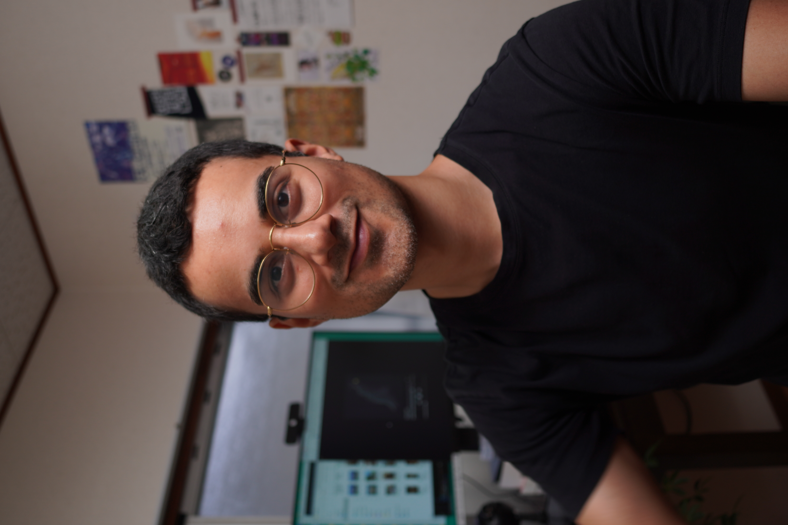

PhD second
Growing communicator
PhD, en segundo lugar
Comunicador en crecimiento
Hi! I'm Abel. I am doing a PhD at Kyoto University where I try to spot some of the problems in novel types of sustainability science. Especially problematic is how funders continue giving more responsibilities to researchers, at the cost of research quality. I work in the "qualitative social sciences", but because I consider that the standard methods in this field are sub-optimal, I have developed my own system of data management and analysis.
I am not planning to stay in academia. I intend to make a career in public education and communications. That's why I have spent the past year and a half learning how to make educational videos. Big learning curve, but I am getting better. If you like, check some of my vids on my YT and IG.
¡Hola! Soy Abel. Estoy haciendo un doctorado en la Universidad de Kioto, donde intento señalar algunos problemas en los nuevos tipos de ciencia de la sostenibilidad. Es especialmente problemático que los financiadores sigan dándoles más responsabilidades a los investigadores, a costa de la calidad de la investigación. Trabajo en las "ciencias sociales cualitativas", pero como considero que los métodos estándar en este campo son sub-óptimos, he desarrollado mi propio sistema de gestión y análisis de datos.
No planeo quedarme en la academia. Mi intención es hacer una carrera en educación pública y comunicación. Por eso he pasado el último año y medio aprendiendo a hacer videos educativos. Ha sido una curva de aprendizaje empinada, pero voy mejorando. Si quieres, puedes ver algunos de mis videos en mi YT e IG.



Going to: Hong Kong, PASTE conference Viniendo de: intercambio en Viena
Yendo a: Hong Kong, conferencia PASTE